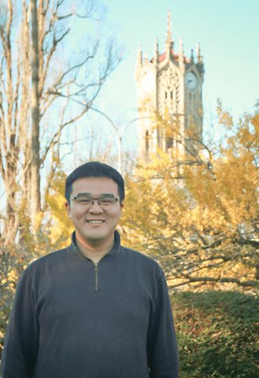
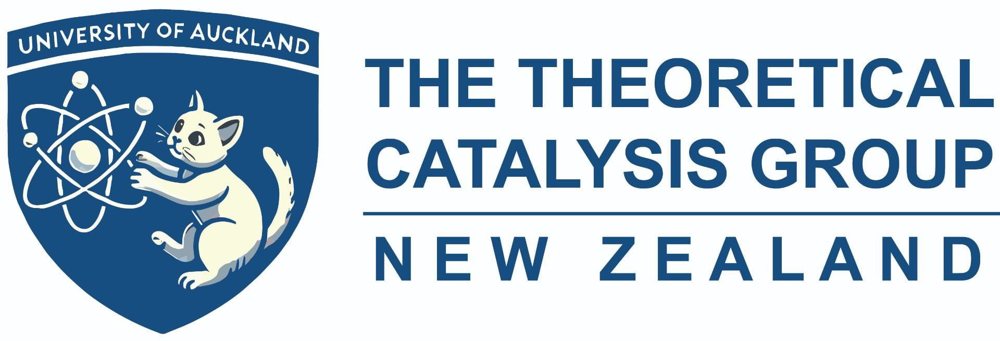

<meta charset="utf-8">
<meta name="viewport" content="width=device-width, initial-scale=1, viewport-fit=cover">
<title>Theoretical Catalysis Group</title>
<meta name="claude:viewport-fit-sides" content="cover">
<meta name="description" content="Ziyun Wang Group, University of Auckland. Machine learning, computational chemistry and electrochemistry for heterogeneous catalysis.">
<link rel="preconnect" href="https://fonts.googleapis.com">
<link rel="preconnect" href="https://fonts.gstatic.com" crossorigin>
<script src="https://cdnjs.cloudflare.com/ajax/libs/d3/7.9.0/d3.min.js"></script>
<link rel="stylesheet" href="https://fonts.googleapis.com/css2?family=Bricolage+Grotesque:opsz,wght@12..96,400;12..96,600;12..96,800&family=Instrument+Sans:wght@400;500;600&family=JetBrains+Mono:wght@400;500&display=swap">
<style>
/* Layout: a light "stage" hero (the group's papers as a live atom field) over a calm reading column.
   Palette follows the group shield: Auckland navy + the cat's cream. Deliberately single-theme (light). */
:root {
  --bg: #f3f6fa;
  --panel: #ffffff;
  --ink: #10233d;
  --muted: #566a82;
  --line: #dbe3ec;
  --grid: rgba(27,76,130,.05);
  --brand: #1b4c82;          /* shield navy */
  --brand-soft: rgba(27,76,130,.07);
  --cream: #f3eed6;          /* the cat */
  --stage: #17406d;          /* shield blue, behind demos and photos */
  --stage-ink: var(--ink);
  --stage-muted: var(--muted);
  --stage-line: var(--line);
  --ai: #0e8fa3;
  --display: "Bricolage Grotesque", "Segoe UI", system-ui, sans-serif;
  --body: "Instrument Sans", "Segoe UI", system-ui, sans-serif;
  --mono: "JetBrains Mono", ui-monospace, Consolas, monospace;
  --maxw: 1180px;
  --ease: cubic-bezier(.2,.7,.2,1);
  color-scheme: light;
}

* { box-sizing: border-box; }
html { scroll-behavior: smooth; background: var(--bg); }
body {
  color: var(--ink); font: 16px/1.6 var(--body);
  background:
    linear-gradient(var(--grid) 1px, transparent 1px) 0 0 / 44px 44px,
    linear-gradient(90deg, var(--grid) 1px, transparent 1px) 0 0 / 44px 44px,
    var(--bg);
}
a { color: inherit; }
:focus-visible { outline: 2px solid var(--ai); outline-offset: 3px; }
h1, h2, h3 { font-family: var(--display); text-wrap: balance; margin: 0; }
.wrap { max-width: var(--maxw); margin: 0 auto; padding-left: max(16px, env(safe-area-inset-left, 0px)); padding-right: max(16px, env(safe-area-inset-right, 0px)); }
.mono { font-family: var(--mono); font-size: .78rem; letter-spacing: .02em; }
.eyebrow { font: 500 .74rem var(--mono); letter-spacing: .14em; text-transform: uppercase; color: var(--ai); }
.btn { display: inline-flex; align-items: center; gap: 8px; font: 600 .92rem var(--body); text-decoration: none; border-radius: 999px; padding: 10px 18px; border: 1px solid currentColor; background: transparent; color: inherit; cursor: pointer; transition: transform .25s var(--ease), background .25s, color .25s; }
.btn:hover { transform: translateY(-2px); }
.btn.solid { background: var(--brand); color: #fff; border-color: var(--brand); }

/* ---------- nav ---------- */
body::before { content: ""; position: fixed; inset: 0 0 auto; height: env(safe-area-inset-top, 0px); z-index: 30; background: var(--bg); }
.nav { position: sticky; top: env(safe-area-inset-top, 0px); z-index: 20; background: rgba(243,246,250,.86); backdrop-filter: blur(12px); color: var(--stage-ink); border-bottom: 1px solid var(--stage-line); }
.nav .wrap { display: flex; align-items: center; justify-content: space-between; gap: 16px; padding-block: 10px; }
.brand { display: flex; align-items: center; gap: 12px; text-decoration: none; min-width: 0; }
.brand img { width: 40px; height: 40px; object-fit: contain; transition: transform .5s var(--ease); }
.brand:hover img { transform: rotate(-8deg) scale(1.06); }
.brand b { font: 600 .98rem/1.15 var(--display); display: block; }
.brand small { color: var(--stage-muted); font-size: .78rem; }
.nav nav { display: flex; gap: 2px; flex-wrap: wrap; justify-content: flex-end; }
.nav nav a { position: relative; text-decoration: none; color: var(--stage-muted); padding: 6px 10px; font-size: .9rem; transition: color .2s; }
.nav nav a::after { content: ""; position: absolute; left: 10px; right: 10px; bottom: 2px; height: 2px; background: var(--cream); transform: scaleX(0); transform-origin: left; transition: transform .3s var(--ease); background: var(--brand); }
.nav nav a:hover, .nav nav a.on { color: var(--stage-ink); }
.nav nav a:hover::after, .nav nav a.on::after { transform: scaleX(1); }
@media (max-width: 760px) { .brand small { display: none; } .nav nav a { padding: 6px 6px; font-size: .82rem; } .nav nav a::after { left: 6px; right: 6px; } }
@media (max-width: 540px) { .nav nav a.opt { display: none; } }

/* ---------- hero stage ---------- */
.stage { background: transparent; color: var(--stage-ink); position: relative; overflow: hidden; }
.stage::before { display: none; content: ""; position: absolute; left: 0; right: 0; top: 0; height: 120px; pointer-events: none; z-index: 1;
  background: linear-gradient(180deg, transparent, rgba(103,216,230,.06) 85%, rgba(103,216,230,.35) 100%); transform: translateY(-120px); animation: scan 7s linear infinite; }
@keyframes scan { to { transform: translateY(900px); } }
@media (prefers-reduced-motion: reduce) { .stage::before { display: none; } }
.hero { display: grid; grid-template-columns: minmax(0, 5fr) minmax(0, 7fr); gap: 24px; align-items: center; padding-block: 48px 40px; }
.hero-text { display: grid; gap: 22px; align-content: center; min-width: 0; position: relative; z-index: 2; }
.hero-text .shield { width: 92px; height: 92px; object-fit: contain; filter: drop-shadow(0 10px 18px rgba(27,76,130,.25)); animation: float 6s ease-in-out infinite; }
@keyframes float { 50% { transform: translateY(-6px) rotate(-2deg); } }
.hero h1 { font-size: clamp(2.2rem, 4.6vw, 3.8rem); font-weight: 800; line-height: 1.02; letter-spacing: -.02em; }
.hero h1 span { color: var(--brand); }
.hero .lede { color: var(--stage-muted); font-size: 1.06rem; margin: 0; max-width: 46ch; }

.kpis { display: flex; flex-wrap: wrap; gap: 10px 28px; }
.kpi .v { font: 700 1.9rem/1 var(--display); font-variant-numeric: tabular-nums; }
.kpi .l { color: var(--stage-muted); font-size: .78rem; margin-top: 4px; }
.cta { display: flex; flex-wrap: wrap; gap: 10px; }
.field-wrap { position: relative; min-width: 0; height: clamp(440px, 64vh, 640px); }
#field { position: absolute; inset: 0; width: 100%; height: 100%; display: block; cursor: crosshair; touch-action: pan-y; }
.field-ui { position: absolute; left: 0; right: 0; bottom: 0; display: flex; flex-wrap: wrap; justify-content: space-between; align-items: flex-end; gap: 10px; pointer-events: none; }
.field-ui > * { pointer-events: auto; }
.seg { display: inline-flex; border: 1px solid var(--stage-line); border-radius: 999px; padding: 3px; background: rgba(255,255,255,.8); backdrop-filter: blur(6px); position: relative; }
.seg button { position: relative; z-index: 1; font: 500 .8rem var(--body); color: var(--stage-muted); background: none; border: 0; padding: 6px 12px; border-radius: 999px; cursor: pointer; transition: color .25s; }
.seg button[aria-pressed="true"] { color: #fff; }
.seg .pill { position: absolute; top: 3px; bottom: 3px; border-radius: 999px; background: var(--brand); transition: left .4s var(--ease), width .4s var(--ease); }
.replay { font: 500 .8rem var(--body); color: var(--stage-ink); background: rgba(255,255,255,.8); border: 1px solid var(--stage-line); border-radius: 999px; padding: 7px 14px; cursor: pointer; }
.replay:hover { border-color: var(--brand); }
.legend { position: absolute; top: 4px; right: 0; display: grid; gap: 4px; justify-items: end; }
.legend button { display: inline-flex; align-items: center; gap: 8px; font: .76rem var(--body); color: var(--stage-muted); background: none; border: 0; cursor: pointer; padding: 2px 0; transition: color .2s, opacity .2s; }
.legend button:hover, .legend button[aria-pressed="true"] { color: var(--stage-ink); }
.legend .sw { width: 10px; height: 10px; border-radius: 50%; }
.legend .orb { width: 14px; height: 10px; border: 1px solid var(--ai); border-radius: 50%; }
.legend.dim button[data-t]:not([aria-pressed="true"]) { opacity: .45; }
.hint { position: absolute; left: 0; top: 4px; max-width: calc(100% - 190px); color: var(--stage-muted); }
@media (max-width: 900px) { .hint { max-width: 100%; } }
.big-year { position: absolute; left: 50%; top: 46%; transform: translate(-50%, -50%); font: 800 clamp(4rem, 12vw, 9rem)/1 var(--display); color: rgba(27,76,130,.08); pointer-events: none; font-variant-numeric: tabular-nums; }
.scan { position: absolute; pointer-events: none; max-width: 300px; background: rgba(255,255,255,.96); box-shadow: 0 12px 30px -12px rgba(16,35,61,.3); border: 1px solid var(--stage-line); border-radius: 10px; padding: 10px 12px; font-size: .84rem; line-height: 1.4; transform: translate(14px, 14px); opacity: 0; transition: opacity .15s; z-index: 3; }
.scan.on { opacity: 1; }
.scan b { display: block; margin-bottom: 4px; font-weight: 600; }
.scan .m { color: var(--stage-muted); font: .72rem var(--mono); }
@media (max-width: 900px) {
  .hero { grid-template-columns: 1fr; padding-block: 36px 24px; }
  .hero-text .shield { width: 72px; height: 72px; }
  .field-wrap { height: 460px; }
  .legend { display: none; }
}

/* ---------- sections ---------- */
section.block { padding-block: 88px; }
section.block + section.block { border-top: 1px solid var(--line); }
.sec-head { display: grid; gap: 10px; margin-bottom: 36px; max-width: 64ch; }
.sec-head h2 { font-size: clamp(1.8rem, 3.6vw, 2.6rem); font-weight: 700; letter-spacing: -.015em; }
.sec-head p { color: var(--muted); margin: 0; }
.rise { transition: transform .9s var(--ease), opacity .9s var(--ease); }
.rise.pre { transform: translateY(28px); opacity: .25; }
@media (prefers-reduced-motion: reduce) { html { scroll-behavior: auto; } .rise, .rise.pre { transform: none; opacity: 1; transition: none; } .hero-text .shield { animation: none; } }

/* research */
.areas { display: grid; grid-template-columns: repeat(3, minmax(0, 1fr)); gap: 22px; }
.area { background: var(--panel); border: 1px solid var(--line); border-radius: 16px; overflow: hidden; display: grid; grid-template-rows: auto 1fr; transition: transform .4s var(--ease), box-shadow .4s var(--ease); }
.area:hover { transform: translateY(-6px); box-shadow: 0 18px 40px -20px rgba(16,35,61,.35); }
.area canvas { width: 100%; height: 170px; display: block; background: var(--stage); }
.area .txt { padding: 20px 22px 24px; display: grid; gap: 8px; align-content: start; }
.area h3 { font-size: 1.3rem; font-weight: 600; }
.area p { margin: 0; color: var(--muted); font-size: .95rem; }
.area ul { margin: 4px 0 0; padding-left: 18px; color: var(--muted); font-size: .9rem; }
.loop { margin-top: 28px; display: flex; flex-wrap: wrap; align-items: center; gap: 8px; }
.loop .n { border: 1px solid var(--line); background: var(--panel); border-radius: 999px; padding: 4px 12px; font-size: .86rem; }
.loop .arr { width: 34px; height: 2px; background: linear-gradient(90deg, var(--line) 0 40%, var(--brand) 40% 60%, var(--line) 60%); background-size: 200% 100%; animation: flow 1.6s linear infinite; }
@keyframes flow { from { background-position: 100% 0; } to { background-position: -100% 0; } }
@media (max-width: 860px) { .areas { grid-template-columns: 1fr; } }
@media (prefers-reduced-motion: reduce) { .loop .arr { animation: none; } }

/* latest carousel */
.track { display: grid; grid-auto-flow: column; grid-auto-columns: minmax(280px, 1fr); gap: 18px; overflow-x: auto; scroll-snap-type: x mandatory; scroll-behavior: smooth; padding-bottom: 8px; scrollbar-width: thin; }
@media (min-width: 900px) { .track { grid-auto-columns: calc((100% - 36px) / 3); } }
.paper { scroll-snap-align: start; text-decoration: none; background: var(--panel); border: 1px solid var(--line); border-radius: 14px; padding: 20px; display: grid; gap: 10px; align-content: start; position: relative; overflow: hidden; transition: transform .4s var(--ease), border-color .3s; }
.paper::before { content: ""; position: absolute; inset: 0 0 auto; height: 3px; background: var(--c, var(--brand)); transform: scaleX(.15); transform-origin: left; transition: transform .5s var(--ease); }
.paper:hover { transform: translateY(-4px); border-color: var(--c, var(--brand)); }
.paper:hover::before { transform: scaleX(1); }
.paper h3 { font: 600 1.04rem/1.35 var(--body); }
.paper .jr { font-style: italic; color: var(--brand); font-size: .9rem; }
.paper .d { color: var(--muted); }
.car-ctl { display: flex; gap: 8px; justify-content: flex-end; margin-top: 14px; }
.car-ctl button { width: 40px; height: 40px; border-radius: 50%; border: 1px solid var(--line); background: var(--panel); color: var(--ink); cursor: pointer; font-size: 1rem; transition: border-color .2s, transform .2s; }
.car-ctl button:hover { border-color: var(--brand); transform: scale(1.06); }

/* publications */
.pub-top { display: flex; justify-content: space-between; align-items: flex-end; flex-wrap: wrap; gap: 10px; }
.sync { display: inline-flex; align-items: center; gap: 8px; color: var(--muted); }
.dot { width: 8px; height: 8px; border-radius: 50%; background: var(--muted); }
.dot.live { background: #2fa57e; box-shadow: 0 0 0 4px rgba(47,165,126,.18); animation: pulse 2s infinite; }
@keyframes pulse { 50% { box-shadow: 0 0 0 7px rgba(47,165,126,.05); } }
.tools { display: flex; flex-wrap: wrap; gap: 8px; align-items: center; margin-bottom: 8px; }
.chip { font: 500 .85rem var(--body); border: 1px solid var(--line); background: var(--panel); color: var(--muted); border-radius: 999px; padding: 6px 14px; cursor: pointer; transition: all .25s var(--ease); }
.chip:hover { color: var(--ink); border-color: var(--brand); }
.chip[aria-pressed="true"] { color: var(--bg); background: var(--ink); border-color: var(--ink); }
.chip .n { font: .74rem var(--mono); opacity: .7; margin-left: 4px; }
#q { flex: 1 1 220px; min-width: 0; font: inherit; color: var(--ink); background: var(--panel); border: 1px solid var(--line); border-radius: 999px; padding: 8px 16px; transition: border-color .2s; }
#q:focus { border-color: var(--brand); outline: none; }
.pubs { list-style: none; margin: 0; padding: 0; }
.pub { display: grid; grid-template-columns: 74px minmax(0, 1fr) auto; gap: 4px 18px; padding: 16px 8px; border-top: 1px solid var(--line); border-radius: 8px; transition: background .25s; animation: inrow .5s var(--ease) both; }
.pub:hover { background: var(--brand-soft); }
@keyframes inrow { from { opacity: 0; transform: translateY(8px); } }
@media (prefers-reduced-motion: reduce) { .pub { animation: none; } }
.pub .when { font: .76rem var(--mono); color: var(--muted); padding-top: 3px; }
.pub .t { font-weight: 600; text-decoration: none; }
.pub .t:hover { color: var(--brand); text-decoration: underline; }
.pub .au { color: var(--muted); font-size: .86rem; margin-top: 2px; }
.pub .au mark { background: none; color: var(--ink); font-weight: 600; }
.pub .meta { display: flex; flex-wrap: wrap; gap: 6px 12px; margin-top: 6px; align-items: center; font-size: .86rem; }
.pub .jr { font-style: italic; color: var(--brand); }
.tdot { display: inline-flex; align-items: center; gap: 6px; color: var(--muted); }
.tdot i { width: 8px; height: 8px; border-radius: 50%; background: var(--c); }
.badge { font: 500 .66rem var(--mono); text-transform: uppercase; letter-spacing: .08em; color: var(--brand); border: 1px solid var(--line); border-radius: 4px; padding: 1px 6px; }
.cites { font: .76rem var(--mono); color: var(--muted); text-align: right; white-space: nowrap; padding-top: 3px; font-variant-numeric: tabular-nums; }
@media (max-width: 620px) { .pub { grid-template-columns: minmax(0, 1fr); } .cites { text-align: left; } }
.more { margin-top: 18px; display: flex; gap: 14px; align-items: center; color: var(--muted); font-size: .9rem; flex-wrap: wrap; }
.more .btn { color: var(--ink); }

/* team */
.pi { display: grid; grid-template-columns: minmax(0, 300px) minmax(0, 1fr); gap: 40px; align-items: start; margin-bottom: 24px; }
.pi .photo { border-radius: 18px; overflow: hidden; aspect-ratio: 3 / 4; background: var(--stage); }
.pi .photo img { width: 100%; height: 100%; object-fit: cover; object-position: 50% 25%; display: block; transition: transform 1.2s var(--ease); }
.pi .photo:hover img { transform: scale(1.04); }
.pi h3 { font-size: 1.8rem; font-weight: 700; }
.pi .role { color: var(--brand); font: 500 .78rem var(--mono); text-transform: uppercase; letter-spacing: .1em; margin: 6px 0 16px; }
.pi p { margin: 0 0 12px; color: var(--muted); max-width: 66ch; }
.honors { display: flex; flex-wrap: wrap; gap: 8px; margin: 6px 0 18px; }
.honors span { font-size: .82rem; background: var(--brand-soft); color: var(--ink); border-radius: 999px; padding: 4px 12px; }
.links { display: flex; flex-wrap: wrap; gap: 8px; }
.links a { font: .8rem var(--mono); text-decoration: none; border: 1px solid var(--line); border-radius: 999px; padding: 5px 12px; transition: border-color .2s, color .2s; }
.links a:hover { border-color: var(--brand); color: var(--brand); }
.cv { list-style: none; margin: 18px 0 0; padding: 0; display: grid; gap: 6px; }
.cv li { display: grid; grid-template-columns: 104px minmax(0, 1fr); gap: 12px; font-size: .9rem; }
.cv li span:first-child { font: .76rem var(--mono); color: var(--muted); padding-top: 2px; }
@media (max-width: 760px) { .pi { grid-template-columns: 1fr; } .pi .photo { max-width: 260px; } }
.group-h { margin: 40px 0 14px; }
.group-h h4 { margin: 0; font: 600 1.05rem var(--display); }
.crew { display: grid; grid-template-columns: repeat(auto-fill, minmax(150px, 1fr)); gap: 16px; perspective: 900px; }
.mate { background: none; border: 0; padding: 0; text-align: left; color: inherit; font: inherit; cursor: pointer; display: grid; gap: 8px; align-content: start; }
.mate .ph { aspect-ratio: 3 / 4; border-radius: 14px; overflow: hidden; background: var(--stage); position: relative; transition: transform .35s var(--ease), box-shadow .35s var(--ease); }
.mate .ph img { width: 100%; height: 100%; object-fit: cover; object-position: 50% 22%; display: block; transition: transform .6s var(--ease), filter .4s; }
.mate .ph::after { content: ""; position: absolute; inset: 0; background: radial-gradient(circle at var(--gx, 50%) var(--gy, 30%), rgba(255,255,255,.28), transparent 55%); opacity: 0; transition: opacity .3s; }
.mate:hover .ph { box-shadow: 0 22px 36px -18px rgba(16,35,61,.55); }
.mate:hover .ph::after { opacity: 1; }
.mate:hover .ph img { transform: scale(1.06); }
.mate .nm { font-weight: 600; font-size: .95rem; line-height: 1.25; }
.mate .rl { color: var(--muted); font-size: .8rem; }
.crew.alumni { grid-template-columns: repeat(auto-fill, minmax(110px, 1fr)); gap: 12px; }
.crew.alumni .nm { font-size: .85rem; font-weight: 500; }

dialog.lightbox { border: 0; padding: 0; background: transparent; color: var(--ink); max-width: min(880px, calc(100vw - 32px)); width: 100%; }
dialog.lightbox::backdrop { background: rgba(5,12,25,.72); backdrop-filter: blur(6px); }
.lb { display: grid; grid-template-columns: minmax(0, 1fr) minmax(0, 1fr); background: var(--panel); border-radius: 20px; overflow: hidden; animation: pop .45s var(--ease); }
@keyframes pop { from { opacity: 0; transform: scale(.94) translateY(12px); } }
.lb img { width: 100%; height: 100%; max-height: 78vh; object-fit: cover; object-position: 50% 20%; display: block; background: var(--stage); }
.lb .info { padding: 32px; display: grid; align-content: space-between; gap: 24px; }
.lb h3 { font-size: 2rem; font-weight: 700; }
.lb .rl { color: var(--brand); font: 500 .8rem var(--mono); text-transform: uppercase; letter-spacing: .1em; margin-top: 6px; }
.lb .nav-row { display: flex; gap: 8px; align-items: center; }
.lb .nav-row button { width: 42px; height: 42px; border-radius: 50%; border: 1px solid var(--line); background: var(--panel); color: var(--ink); cursor: pointer; font-size: 1rem; }
.lb .nav-row button:hover { border-color: var(--brand); }
.lb .nav-row .close { margin-left: auto; width: auto; padding: 0 16px; border-radius: 999px; font: 500 .85rem var(--body); }
.lb .count { color: var(--muted); }
@media (max-width: 640px) { .lb { grid-template-columns: 1fr; } .lb img { max-height: 52vh; } .lb .info { padding: 22px; } }
@media (prefers-reduced-motion: reduce) { .lb { animation: none; } }

.join { margin-top: 56px; border-radius: 18px; padding: 32px; background: var(--brand); color: #fff; display: flex; flex-wrap: wrap; gap: 18px 32px; justify-content: space-between; align-items: center; }
.join p { margin: 6px 0 0; color: rgba(255,255,255,.8); max-width: 60ch; }
.join h3 { font-size: 1.5rem; }
.join .btn.solid { background: #fff; color: var(--brand); border-color: #fff; }

/* contact + footer */
.contact { display: grid; grid-template-columns: repeat(3, minmax(0, 1fr)); gap: 28px; }
.contact div { min-width: 0; }
.contact h4 { margin: 0 0 8px; font: 500 .74rem var(--mono); color: var(--muted); text-transform: uppercase; letter-spacing: .12em; }
.contact p { margin: 0; }
.copy { font: .78rem var(--mono); background: transparent; border: 1px solid var(--line); color: var(--muted); border-radius: 6px; padding: 2px 8px; cursor: pointer; margin-left: 6px; }
@media (max-width: 760px) { .contact { grid-template-columns: 1fr; } }
footer { background: var(--brand); color: rgba(255,255,255,.78); padding-block: 36px; font-size: .85rem; }
footer .wrap { display: flex; flex-wrap: wrap; gap: 16px 32px; justify-content: space-between; align-items: center; }
footer .logo { background: #fff; border-radius: 10px; padding: 8px 14px; display: block; max-width: 100%; }
footer .logo img { height: 46px; width: auto; max-width: 100%; display: block; object-fit: contain; }
</style>

<header class="nav">
  <div class="wrap">
    <a class="brand" href="#top">
      
      <span><b>Theoretical Catalysis Group</b><small>Ziyun Wang Group · University of Auckland</small></span>
    </a>
    <nav aria-label="Sections">
      <a href="#research">Research</a>
      <a href="#publications">Publications</a>
      <a href="#team">Team</a>
      <a href="#latest" class="opt">News</a>
      <a href="#contact" class="opt">Contact</a>
    </nav>
  </div>
</header>

<main id="top">
  <section class="stage" aria-labelledby="hero-title">
    <div class="wrap hero">
      <div class="hero-text">
        
        <div class="eyebrow">AI for Science · Heterogeneous Catalysis</div>
        <h1 id="hero-title">Understanding catalysts <span>atom by atom</span></h1>
        <p class="lede">We are the Theoretical Catalysis Group at the University of Auckland. We combine density functional theory, machine learning and electrochemistry to understand the activity, selectivity and stability of catalysts, and to design better ones for CO₂ reduction, water splitting and nitrogen chemistry.</p>
        <div class="kpis" aria-label="Group publication record">
          <div class="kpi"><div class="v" data-count="works">0</div><div class="l">Papers</div></div>
          <div class="kpi"><div class="v" data-count="citations">0</div><div class="l">Citations</div></div>
          <div class="kpi"><div class="v" data-count="h">0</div><div class="l">h-index</div></div>
        </div>
        <div class="cta"><a class="btn solid" href="#research">Our research</a><a class="btn" href="#team">Meet the team</a></div>
      </div>
      <div class="field-wrap" id="fieldWrap">
        <canvas id="field" aria-label="Interactive map of the group's papers. Each dot is a paper, sized by citations and coloured by research area: AI / ML or the reaction studied."></canvas>
        <div class="hint mono">Each dot is a paper · hover to explore, click to open</div>
        <div class="legend" id="legend"></div>
        <div class="big-year" id="bigYear" aria-hidden="true"></div>
        <div class="scan" id="scan"></div>
        <div class="field-ui">
          <div class="seg" id="modes" role="group" aria-label="Arrange papers">
            <span class="pill"></span>
            <button data-m="rings" aria-pressed="true">By year</button>
            <button data-m="topics" aria-pressed="false">By topic</button>
            <button data-m="impact" aria-pressed="false">By impact</button>
          </div>
          <button class="replay" id="replay">▶ Replay our history</button>
        </div>
      </div>
    </div>
  </section>

  <section class="block" id="research" aria-labelledby="research-title">
    <div class="wrap">
      <div class="sec-head rise"><div class="eyebrow">Research</div><h2 id="research-title">Three methods, one loop</h2><p>Calculations generate data, models learn from it, and experiments test what the models predict. Each result feeds the next round.</p></div>
      <div class="areas">
        <article class="area rise"><canvas data-anim="ml" aria-hidden="true"></canvas><div class="txt">
          <div class="eyebrow">Machine learning</div><h3>Models that learn chemistry</h3>
          <p>Graph neural networks, generative models and language-model agents trained on computational chemistry data, so we can screen and design catalysts much faster than DFT alone.</p>
          <ul><li>GNN property prediction for alloys and single-atom sites</li><li>Generative discovery and Pareto-front search in high-entropy alloys</li><li>LLM agents for computational catalyst design</li></ul></div></article>
        <article class="area rise"><canvas data-anim="dft" aria-hidden="true"></canvas><div class="txt">
          <div class="eyebrow">Computational chemistry</div><h3>Realistic interfaces</h3>
          <p>Density functional theory and micro-kinetic modelling of the solid–liquid interface, including solvent, cation and electric-field effects.</p>
          <ul><li>Reaction pathways and kinetics of elementary steps</li><li>Constant-potential and explicit-solvent models</li><li>Selectivity in C–C and C–N coupling</li></ul></div></article>
        <article class="area rise"><canvas data-anim="ec" aria-hidden="true"></canvas><div class="txt">
          <div class="eyebrow">Electrochemistry</div><h3>Tested in the lab</h3>
          <p>Electrolysis, isotope labelling and characterisation with collaborators worldwide, closing the loop between prediction and measurement.</p>
          <ul><li>CO₂ and CO electroreduction to multi-carbon products</li><li>Acidic oxygen evolution and PEM electrolysis</li><li>Electrosynthesis of urea, ammonia and amines</li></ul></div></article>
      </div>
      <div class="loop rise" aria-label="Research loop: DFT data, ML model, candidate catalysts, experiment, new data">
        <span class="n">DFT data</span><span class="arr"></span><span class="n">ML model</span><span class="arr"></span><span class="n">Candidate catalysts</span><span class="arr"></span><span class="n">Experiment</span><span class="arr"></span><span class="n">New data ↺</span>
      </div>
    </div>
  </section>

  <section class="block" id="latest" aria-labelledby="latest-title">
    <div class="wrap">
      <div class="sec-head rise"><div class="eyebrow">News</div><h2 id="latest-title">Latest papers</h2><p>Our newest work in Nature-family, Science-family and flagship chemistry journals. This list updates itself.</p></div>
      <div class="rise"><div class="track" id="track"></div>
        <div class="car-ctl"><button id="prev" aria-label="Previous papers">←</button><button id="next" aria-label="Next papers">→</button></div></div>
    </div>
  </section>

  <section class="block" id="publications" aria-labelledby="pub-title">
    <div class="wrap">
      <div class="pub-top"><div class="sec-head rise" style="margin:0"><div class="eyebrow">Publications</div><h2 id="pub-title">Everything we have published</h2></div>
        <span class="sync mono"><span class="dot" id="syncDot"></span><span id="syncText">Loading…</span></span></div>
      <div class="tools" style="margin-top:28px">
        <button class="chip" data-f="all" aria-pressed="true">All<span class="n" id="n-all"></span></button>
        <button class="chip" data-f="ai" aria-pressed="false">Machine learning<span class="n" id="n-ai"></span></button>
        <button class="chip" data-f="dft" aria-pressed="false">DFT computation<span class="n" id="n-dft"></span></button>
        <button class="chip" data-f="exp" aria-pressed="false">Experiment<span class="n" id="n-exp"></span></button>
        <button class="chip" data-f="top" aria-pressed="false">Nature &amp; Science family<span class="n" id="n-top"></span></button>
        <button class="chip" data-f="cited" aria-pressed="false">Most cited</button>
        <input id="q" type="search" placeholder="Search titles, journals, authors" aria-label="Search publications">
      </div>
      <ol class="pubs" id="pubList"></ol>
      <div class="more"><button class="btn" id="moreBtn">Show more</button><span id="countText"></span></div>
    </div>
  </section>

  <section class="block" id="team" aria-labelledby="team-title">
    <div class="wrap">
      <div class="sec-head rise"><div class="eyebrow">Team</div><h2 id="team-title">The people</h2></div>
      <div class="pi rise">
        <div class="photo"></div>
        <div>
          <h3>Assoc. Prof. Ziyun Wang</h3>
          <div class="role">Principal investigator</div>
          <p>Ziyun Wang is a computational chemist specialising in theoretical catalysis and machine learning. He joined the School of Chemical Sciences at the University of Auckland in 2021 and is now an Associate Professor.</p>
          <p>He has published more than 200 peer-reviewed papers, including corresponding-author papers in Nature, Science, Nature Catalysis, Nature Energy, Nature Chemistry, Nature Synthesis, Nature Sustainability, Nature Communications, JACS, Angewandte Chemie and Advanced Materials.</p>
          <div class="honors"><span>Clarivate Highly Cited Researcher, since 2024</span><span>Stanford World’s Top 2% Scientists</span></div>
          <div class="links">
            <a href="https://scholar.google.com/citations?user=icq-mHoAAAAJ" target="_blank" rel="noopener">Google Scholar</a>
            <a href="https://orcid.org/0000-0002-2817-8367" target="_blank" rel="noopener">ORCID</a>
            <a href="https://profiles.auckland.ac.nz/ziyun-wang" target="_blank" rel="noopener">University profile</a>
          </div>
          <ul class="cv">
            <li><span>2021 – now</span><span>University of Auckland, New Zealand</span></li>
            <li><span>2018 – 2020</span><span>University of Toronto, Canada · with Prof. Edward Sargent</span></li>
            <li><span>2017 – 2018</span><span>Stanford University, USA · with Prof. Jens Nørskov and Prof. Thomas Bligaard</span></li>
            <li><span>2012 – 2017</span><span>PhD, Queen’s University Belfast and University of Manchester, UK · with Prof. Peijun Hu and Prof. Chris Hardacre</span></li>
          </ul>
        </div>
      </div>
      <div id="crew"></div>
      <div class="join rise">
        <div><h3>Join us</h3><p>We welcome PhD students, postdocs and visitors from chemistry, materials science, physics or computer science who want to work where machine learning meets catalysis.</p></div>
        <a class="btn solid" href="#contact">Get in touch</a>
      </div>
    </div>
  </section>

  <section class="block" id="contact" aria-labelledby="contact-title">
    <div class="wrap">
      <div class="sec-head rise"><div class="eyebrow">Contact</div><h2 id="contact-title">Find us</h2></div>
      <div class="contact rise">
        <div><h4>Email</h4><p><span id="email">ziyun.wang@auckland.ac.nz</span><button class="copy" id="copyEmail" type="button">Copy</button></p></div>
        <div><h4>Postal address</h4><p>School of Chemical Sciences<br>University of Auckland<br>Private Bag 92019<br>Auckland 1142, New Zealand</p></div>
        <div><h4>Courier address</h4><p>Science Centre, Chemistry Stores<br>23 Symonds Street, Building 302, Room B10<br>Entry via Carpark 40 off Upper Wellesley Street<br>Auckland 1010</p></div>
      </div>
    </div>
  </section>
</main>

<footer><div class="wrap">
  <span class="logo"></span>
  <span>© Theoretical Catalysis Group, University of Auckland<br><span class="mono">Publication data from OpenAlex (CC0), matched by ORCID and refreshed automatically</span></span>
</div></footer>

<dialog class="lightbox" id="lightbox" aria-label="Team member">
  <div class="lb" id="lbBody"></div>
</dialog>

<script>
const ORCID = "0000-0002-2817-8367";
const REDUCE = matchMedia("(prefers-reduced-motion: reduce)").matches;
const AI_RE = /machine.learn|neural.net|graph.neural|deep.learn|\bGPT\b|\bLLM|large.language|generative|artificial.intelligence|\bAI\b|active.learn|data.driven|high.throughput|mixture.of.experts|pareto|bayesian|transformer|\bagent|descriptor|autonomous/i;
const TOP_RE = /^(Nature|Science)\b|^Joule$|^Chem$/;
const FLAGSHIP_RE = /^(Nature|Science)\b|^Joule$|^Chem$|Journal of the American Chemical Society|Angewandte Chemie International Edition|^Advanced Materials$/;
const SHORT_J = { "Journal of the American Chemical Society": "J. Am. Chem. Soc.", "Angewandte Chemie International Edition": "Angew. Chem. Int. Ed.", "Proceedings of the National Academy of Sciences": "PNAS" };
// Three fields. Machine learning is found from the title; Experiment only for DOIs listed as "exp" in data/categories.json;
// everything else (including our co-first and co-second author collaborations) is DFT computation. Hue order validated for CVD.
const TOPICS = [
  { key: "ml", name: "Machine learning", color: "#D9773F" },
  { key: "dft", name: "DFT computation", color: "#3E8EE8" },
  { key: "exp", name: "Experiment", color: "#2FA57E" }
];
// Secondary tag only: the reaction a paper studies.
const REACTIONS = [
  { name: "N₂ & urea", re: /nitrogen reduction|nitrate|nitrite|ammonia|urea|C[–-]N coupling|\bN2\b|N₂|amination|amine/i },
  { name: "CO₂ & CO", re: /CO2|CO₂|\bCO\b|carbon dioxide|carbon monoxide|ethylene|acetate|ethanol|formate|formic|methane|C[–-]C coupling|multicarbon|syngas|carbamate/i },
  { name: "Water, O₂ & H₂", re: /oxygen evolution|oxygen reduction|water oxidation|water splitting|hydrogen evolution|hydrogen oxidation|\bOER\b|\bHER\b|\bORR\b|electrolys|RuO|IrO|fuel cell|seawater/i },
  { name: "Batteries", re: /batter|\bZn\b|Zn2|zinc|lithium|\bLi\b|sodium|anode|cathode|dendrite/i },
  { name: "Selective synthesis", re: /hydrogenation|oxidation|acetylene|alcohol|aldehyde|chlorination|methanol|furfural|propylene|C[–-]H/i }
];
const reactionOf = p => (REACTIONS.find(r => r.re.test(p.t + " " + p.k)) || {}).name || "";

const $ = s => document.querySelector(s);
const esc = s => String(s).replace(/[&<>"]/g, c => ({ "&": "&amp;", "<": "&lt;", ">": "&gt;", '"': "&quot;" }[c]));
const fmt = n => n.toLocaleString("en-NZ");
const jname = j => SHORT_J[j] || j;
const isAI = p => topicOf(p) === 0;
let OVERRIDE = {};
const topicOf = p => { const k = OVERRIDE[(p.doi || "").toLowerCase()], i = k ? TOPICS.findIndex(t => t.key === k) : -1; if (i >= 0) return i; return AI_RE.test(p.t) ? 0 : 1; };
const slug = n => n.replace(/^(Assoc\. Prof\.|Prof\.|Dr\.)\s*/, "").toLowerCase().replace(/[^a-z]+/g, "-").replace(/^-|-$/g, "");
const hash = s => { let h = 2166136261; for (const c of s) h = Math.imul(h ^ c.charCodeAt(0), 16777619); return ((h >>> 0) % 10000) / 10000; };

let DATA = null;

/* ================= data ================= */
function fromOpenAlex(author, works) {
  const norm = t => t.toLowerCase().replace(/[^a-z0-9]/g, "");
  const seen = new Map();
  for (const w of works) {
    if (!["article", "review", "letter"].includes(w.type) || !w.title || /^(correction|author correction|erratum|retraction)/i.test(w.title)) continue;
    const rec = { t: w.title.replace(/<[^>]+>/g, "").trim(), d: w.publication_date || "", y: w.publication_year,
      j: w.primary_location?.source?.display_name || "", doi: (w.doi || "").replace("https://doi.org/", ""),
      c: w.cited_by_count || 0, a: (w.authorships || []).map(a => a.author.display_name), k: w.topics?.[0]?.display_name || "" };
    const key = norm(rec.t), prev = seen.get(key);
    if (!prev || (rec.j.includes("International") && !prev.j.includes("International"))) { if (prev) rec.c = Math.max(rec.c, prev.c); seen.set(key, rec); }
    else prev.c = Math.max(prev.c, rec.c);
  }
  const pubs = [...seen.values()].sort((a, b) => b.d.localeCompare(a.d));
  return { synced: new Date().toISOString().slice(0, 10), live: true, stats: { works: pubs.length, citations: author.cited_by_count, h: author.summary_stats.h_index }, pubs };
}
async function fetchLive() {
  const ctl = new AbortController(); setTimeout(() => ctl.abort(), 10000);
  const get = u => fetch(u, { signal: ctl.signal }).then(r => { if (!r.ok) throw new Error(r.status); return r.json(); });
  const sel = "doi,title,publication_date,publication_year,type,primary_location,authorships,cited_by_count,topics";
  const author = await get(`https://api.openalex.org/authors/orcid:${ORCID}`);
  let works = [], page = 1;
  for (;;) {
    const r = await get(`https://api.openalex.org/works?filter=author.orcid:${ORCID}&sort=publication_date:desc&per-page=200&page=${page}&select=${sel}`);
    works = works.concat(r.results);
    if (works.length >= r.meta.count || !r.results.length) break;
    page++;
  }
  return fromOpenAlex(author, works);
}

/* ================= hero field ================= */
const Field = (() => {
  const cv = $("#field"), ctx = cv.getContext("2d"), wrap = $("#fieldWrap"), scan = $("#scan");
  let W = 0, H = 0, nodes = [], guides = null, guideA = 0, mode = "rings", topic = null;
  let mouse = { x: -1e4, y: -1e4 }, hover = null, play = null, running = false, visible = true;
  const sprites = TOPICS.map(t => {
    const c = document.createElement("canvas"); c.width = c.height = 64;
    const g = c.getContext("2d"), r = g.createRadialGradient(32, 32, 0, 32, 32, 32);
    r.addColorStop(0, t.color + "cc"); r.addColorStop(.35, t.color + "44"); r.addColorStop(1, t.color + "00");
    g.fillStyle = r; g.fillRect(0, 0, 64, 64); return c;
  });

  function box() { const narrow = W < 560; return { l: 8, t: 34, r: W - (narrow ? 8 : 150), b: H - 56 }; }
  function setData(pubs) {
    const old = new Map(nodes.map(n => [n.p.t, n]));
    nodes = pubs.map(p => {
      const n = old.get(p.t) || { x: W / 2 + (hash(p.t) - .5) * 40, y: H / 2 + (hash(p.d + p.t) - .5) * 40, a: 0, ex: 0, ox: 0, oy: 0, ph: hash(p.j + p.t) * 6.28 };
      n.p = p; n.topic = topicOf(p); n.ai = n.topic === 0;
      n.time = p.d ? +p.d.slice(0, 4) + (+p.d.slice(5, 7) - 1) / 12 : p.y;
      n.base = 2.2 + Math.sqrt(p.c) * 0.42;
      n.co = new Set(p.a.filter(x => x !== "Ziyun Wang"));
      return n;
    });
    layout();
  }
  function scaleR() { const k = Math.max(.65, Math.min(1.15, Math.min(W, H) / 560)); nodes.forEach(n => n.r = Math.min(20, n.base) * k); }
  function relax(iters, strength) {
    const sn = nodes.map(n => ({ n, x: n.tx, y: n.ty, gx: n.tx, gy: n.ty }));
    const sim = d3.forceSimulation(sn).alphaDecay(0.03)
      .force("x", d3.forceX(d => d.gx).strength(strength)).force("y", d3.forceY(d => d.gy).strength(strength))
      .force("c", d3.forceCollide(d => d.n.r + 1.4).iterations(2)).stop();
    for (let i = 0; i < iters; i++) sim.tick();
    sn.forEach(d => { d.n.tx = d.x; d.n.ty = d.y; });
  }
  function layout() {
    if (!nodes.length || !W) return;
    scaleR();
    const B = box(), cx = (B.l + B.r) / 2, cy = (B.t + B.b) / 2;
    const tmin = Math.floor(Math.min(...nodes.map(n => n.time))), tmax = Math.max(...nodes.map(n => n.time));
    if (mode === "rings") {
      const R = Math.min(B.r - B.l, B.b - B.t) / 2 - 10, r0 = R * .12;
      const rad = t => r0 + (R - r0) * Math.pow((t - tmin) / (tmax - tmin || 1), 1.25);
      const counts = TOPICS.map((_, i) => nodes.filter(n => n.topic === i).length), gap = .07, total = Math.PI * 2 - gap * TOPICS.length;
      let a = -Math.PI / 2; const secs = [];
      TOPICS.forEach((_, i) => { const span = total * counts[i] / nodes.length; secs.push({ a0: a, a1: a + span }); a += span + gap; });
      nodes.forEach(n => { const s = secs[n.topic], ang = s.a0 + (s.a1 - s.a0) * (.06 + .88 * hash(n.p.t)), rr = rad(n.time); n.tx = cx + Math.cos(ang) * rr; n.ty = cy + Math.sin(ang) * rr; });
      relax(160, .22);
      const step = tmax - tmin > 10 ? 4 : 2, rings = [];
      for (let y = Math.ceil((tmin + 1) / step) * step; y <= tmax; y += step) rings.push({ y, r: rad(y) });
      guides = { type: "rings", cx, cy, rings };
    } else if (mode === "topics") {
      const R = Math.min(B.r - B.l, B.b - B.t) / 2;
      const centers = TOPICS.map((_, i) => { const ang = -Math.PI / 2 + i * Math.PI * 2 / TOPICS.length; return { x: cx + Math.cos(ang) * R * .58, y: cy + Math.sin(ang) * R * .52 }; });
      nodes.forEach(n => { const c = centers[n.topic]; n.tx = c.x + (hash(n.p.t) - .5) * 20; n.ty = c.y + (hash(n.p.d + n.p.t) - .5) * 20; });
      relax(220, .09);
      guides = { type: "topics", labels: TOPICS.map((t, i) => { const own = nodes.filter(n => n.topic === i); if (!own.length) return null; const top = Math.min(...own.map(n => n.ty - n.r)); const xs = own.map(n => n.tx); return { x: (Math.min(...xs) + Math.max(...xs)) / 2, y: top - 10, t: t.name }; }).filter(Boolean) };
    } else {
      const maxC = Math.max(...nodes.map(n => n.p.c)), L = Math.log10(maxC + 1);
      const px = t => B.l + 34 + (B.r - B.l - 44) * (t - tmin) / (tmax - tmin || 1), py = c => B.b - 20 - (B.b - B.t - 36) * Math.log10(c + 1) / L;
      nodes.forEach(n => { n.tx = px(n.time); n.ty = py(n.p.c); });
      relax(90, .5);
      const yt = [0, 10, 100, 1000].filter(v => v <= maxC * 1.2).map(v => ({ v, y: py(v) }));
      const xt = []; for (let y = Math.ceil(tmin / 2) * 2; y <= tmax; y += 2) xt.push({ v: y, x: px(y) });
      guides = { type: "impact", B, yt, xt, x0: B.l + 34, yb: B.b - 20 };
    }
    const now = performance.now();
    nodes.forEach(n => n.delay = now + (REDUCE ? 0 : hash(n.p.t + mode) * 350));
    guideA = 0;
    if (REDUCE) nodes.forEach(n => { n.x = n.tx; n.y = n.ty; });
    kick();
  }
  function resize() {
    const dpr = Math.min(2, devicePixelRatio || 1); W = wrap.clientWidth; H = wrap.clientHeight;
    cv.width = W * dpr; cv.height = H * dpr; ctx.setTransform(dpr, 0, 0, dpr, 0, 0); layout(); kick();
  }
  function lit(n) {
    if (play && n.time > play.t) return 0;
    if (topic !== null && n.topic !== topic) return .12;
    return 1;
  }
  function drawGuides() {
    if (!guides) return;
    guideA = Math.min(1, guideA + .03);
    ctx.save(); ctx.globalAlpha = guideA; ctx.strokeStyle = "rgba(27,76,130,.18)"; ctx.fillStyle = "rgba(86,106,130,.9)"; ctx.font = "10.5px JetBrains Mono, monospace"; ctx.lineWidth = 1;
    if (guides.type === "rings") {
      ctx.setLineDash([2, 5]);
      for (const g of guides.rings) { ctx.beginPath(); ctx.arc(guides.cx, guides.cy, g.r, 0, 7); ctx.stroke(); }
      ctx.setLineDash([]); ctx.textAlign = "center";
      for (const g of guides.rings) { const w = ctx.measureText(g.y).width + 8; ctx.fillStyle = "rgba(243,246,250,.95)"; ctx.fillRect(guides.cx - w / 2, guides.cy - g.r - 7, w, 13); ctx.fillStyle = "rgba(86,106,130,.95)"; ctx.fillText(g.y, guides.cx, guides.cy - g.r + 4); }
    } else if (guides.type === "topics") {
      ctx.textAlign = "center"; ctx.font = "500 12px Instrument Sans, sans-serif"; ctx.fillStyle = "#10233d";
      for (const l of guides.labels) ctx.fillText(l.t, l.x, Math.max(14, l.y));
    } else {
      ctx.textAlign = "right";
      for (const t of guides.yt) { ctx.beginPath(); ctx.moveTo(guides.x0, t.y); ctx.lineTo(guides.B.r, t.y); ctx.stroke(); ctx.fillText(t.v, guides.x0 - 6, t.y + 4); }
      ctx.textAlign = "center";
      for (const t of guides.xt) ctx.fillText("’" + String(t.v).slice(2), t.x, guides.yb + 16);
      ctx.save(); ctx.translate(guides.B.l + 6, (guides.B.t + guides.yb) / 2); ctx.rotate(-Math.PI / 2); ctx.fillText("citations (log scale)", 0, 0); ctx.restore();
    }
    ctx.restore();
  }
  function frame(now) {
    running = false;
    ctx.clearRect(0, 0, W, H);
    drawGuides();
    if (play) {
      play.t = play.from + (play.to - play.from) * Math.min(1, (now - play.start) / play.dur);
      $("#bigYear").textContent = Math.floor(play.t);
      if (play.t >= play.to) { play = null; $("#bigYear").textContent = ""; $("#replay").textContent = "▶ Replay our history"; }
    }
    let best = null, bd = 1e9;
    for (const n of nodes) { if (n.a < .3) continue; const d = Math.hypot(n.x + n.ox - mouse.x, n.y + n.oy - mouse.y); if (d < n.r + 8 && d < bd) { bd = d; best = n; } }
    if (best !== hover) { hover = best; showScan(); }
    if (hover) { // co-author bonds
      ctx.lineWidth = 1; ctx.strokeStyle = TOPICS[hover.topic].color + "66";
      for (const n of nodes) if (n !== hover && n.a > .3 && [...n.co].some(x => hover.co.has(x))) {
        ctx.beginPath(); ctx.moveTo(hover.x + hover.ox, hover.y + hover.oy); ctx.lineTo(n.x + n.ox, n.y + n.oy); ctx.stroke(); n.ex = Math.max(n.ex, .5);
      }
    }
    let busy = !!play || !!hover;
    ctx.globalCompositeOperation = "multiply";
    for (const n of nodes) {
      if (now > n.delay) { const k = REDUCE ? 1 : .085; n.x += (n.tx - n.x) * k; n.y += (n.ty - n.y) * k; }
      if (Math.abs(n.tx - n.x) + Math.abs(n.ty - n.y) > .3) busy = true;
      const target = lit(n);
      if (play && n.a < .05 && target > 0) n.ex = 1;
      n.a += (target - n.a) * .12;
      if (Math.abs(target - n.a) > .01) busy = true;
      // the cursor acts like a catalyst: nearby atoms get excited and step aside
      const dx = n.x - mouse.x, dy = n.y - mouse.y, d = Math.hypot(dx, dy), R = 80;
      let fx = 0, fy = 0;
      if (d < R && !REDUCE && n !== hover) { const f = (1 - d / R) ** 2 * 14; fx = dx / (d || 1) * f; fy = dy / (d || 1) * f; n.ex = Math.max(n.ex, (1 - d / R) * .8); busy = true; }
      n.ox += (fx - n.ox) * .15; n.oy += (fy - n.oy) * .15;
      n.ex *= .95; if (n.ex > .02) busy = true;
      if (n.a < .01) continue;
      const s = n.r * (3.2 + n.ex * 2), x = n.x + n.ox, y = n.y + n.oy;
      ctx.globalAlpha = n.a * (.22 + n.ex * .4);
      ctx.drawImage(sprites[n.topic], x - s, y - s, s * 2, s * 2);
    }
    ctx.globalCompositeOperation = "source-over";
    const tt = now / 1000;
    for (const n of nodes) {
      if (n.a < .01) continue;
      const x = n.x + n.ox, y = n.y + n.oy, r = n.r * (1 + n.ex * .25) * (n === hover ? 1.25 : 1);
      ctx.globalAlpha = n.a; ctx.fillStyle = TOPICS[n.topic].color;
      ctx.beginPath(); ctx.arc(x, y, r, 0, 7); ctx.fill();
      if (n.ai) {
        const rx = r + 5, ry = (r + 5) * .45, rot = n.ph, e = REDUCE ? n.ph : tt * 1.6 + n.ph;
        ctx.strokeStyle = "rgba(14,143,163,.85)"; ctx.lineWidth = 1;
        ctx.beginPath(); ctx.ellipse(x, y, rx, ry, rot, 0, 7); ctx.stroke();
        const ex = x + rx * Math.cos(e) * Math.cos(rot) - ry * Math.sin(e) * Math.sin(rot), ey = y + rx * Math.cos(e) * Math.sin(rot) + ry * Math.sin(e) * Math.cos(rot);
        ctx.fillStyle = "#0e8fa3"; ctx.beginPath(); ctx.arc(ex, ey, 2, 0, 7); ctx.fill();
        busy = true;
      }
      if (n === hover) { ctx.strokeStyle = "#10233d"; ctx.lineWidth = 1.5; ctx.beginPath(); ctx.arc(x, y, r + 4, 0, 7); ctx.stroke(); }
    }
    ctx.globalAlpha = 1;
    if (guideA < 1) busy = true;
    if (busy && visible && (!REDUCE || play || guideA < 1)) kick();
  }
  function kick() { if (!running && W) { running = true; requestAnimationFrame(frame); } }
  function showScan() {
    if (!hover) { scan.classList.remove("on"); cv.style.cursor = "crosshair"; return; }
    const p = hover.p;
    scan.innerHTML = `<b>${esc(p.t)}</b><span style="color:${TOPICS[hover.topic].color}">●</span> ${esc(jname(p.j))} · ${p.y}<div class="m">${fmt(p.c)} citations${hover.ai ? " · AI / ML" : ""} · click to open</div>`;
    const x = Math.min(hover.x + hover.ox, W - 320), y = Math.min(hover.y + hover.oy, H - 120);
    scan.style.left = Math.max(0, x) + "px"; scan.style.top = y + "px"; scan.classList.add("on"); cv.style.cursor = "pointer";
  }
  cv.addEventListener("pointermove", e => { const r = cv.getBoundingClientRect(); mouse = { x: e.clientX - r.left, y: e.clientY - r.top }; kick(); });
  cv.addEventListener("pointerleave", () => { mouse = { x: -1e4, y: -1e4 }; kick(); });
  cv.addEventListener("click", () => { if (hover?.p.doi) window.open("https://doi.org/" + hover.p.doi, "_blank", "noopener"); });
  new ResizeObserver(resize).observe(wrap);
  new IntersectionObserver(es => { visible = es[0].isIntersecting; if (visible) kick(); }).observe(wrap);
  return {
    setData,
    setMode(m) { mode = m; layout(); },
    setTopic(t) { topic = t; kick(); },
    replay() {
      if (!nodes.length) return;
      const from = Math.floor(Math.min(...nodes.map(n => n.time))), to = Math.max(...nodes.map(n => n.time));
      play = { from, to, t: from, start: performance.now(), dur: REDUCE ? 1 : 9000 };
      nodes.forEach(n => n.a = 0); $("#replay").textContent = "Replaying…"; kick();
    }
  };
})();

function buildLegend() {
  const lg = $("#legend");
  lg.innerHTML = TOPICS.map((t, i) => `<button data-t="${i}" aria-pressed="false">${esc(t.name)}<span class="sw" style="background:${t.color}"></span></button>`).join("");
  lg.querySelectorAll("button[data-t]").forEach(b => b.addEventListener("click", () => {
    const on = b.getAttribute("aria-pressed") !== "true";
    lg.querySelectorAll("button[data-t]").forEach(x => x.setAttribute("aria-pressed", "false"));
    b.setAttribute("aria-pressed", on); lg.classList.toggle("dim", on);
    Field.setTopic(on ? +b.dataset.t : null);
  }));
}
function movePill() {
  const on = $("#modes button[aria-pressed='true']"), pill = $("#modes .pill");
  pill.style.left = on.offsetLeft + "px"; pill.style.width = on.offsetWidth + "px";
}
document.querySelectorAll("#modes button").forEach(b => b.addEventListener("click", () => {
  document.querySelectorAll("#modes button").forEach(x => x.setAttribute("aria-pressed", x === b));
  movePill(); Field.setMode(b.dataset.m);
}));
$("#replay").addEventListener("click", () => Field.replay());

/* ================= research mini animations ================= */
function miniAnims() {
  const items = [...document.querySelectorAll("canvas[data-anim]")].map(cv => ({ cv, ctx: cv.getContext("2d"), kind: cv.dataset.anim, on: true, st: {} }));
  const io = new IntersectionObserver(es => es.forEach(e => { items.find(i => i.cv === e.target).on = e.isIntersecting; }));
  items.forEach(it => io.observe(it.cv));
  function size(it) { const dpr = Math.min(2, devicePixelRatio || 1), w = it.cv.clientWidth, h = it.cv.clientHeight; if (it.w !== w) { it.cv.width = w * dpr; it.cv.height = h * dpr; it.ctx.setTransform(dpr, 0, 0, dpr, 0, 0); it.w = w; it.h = h; it.st = {}; } }
  const label = (ctx, s, x, y) => { ctx.fillStyle = "rgba(159,176,198,.85)"; ctx.font = "10px JetBrains Mono, monospace"; ctx.textAlign = "left"; ctx.fillText(s, x, y); };
  const draw = {
    ml(it, t) { // a small network passing messages layer to layer
      const { ctx, w, h } = it, layers = [3, 5, 5, 2], xs = layers.map((_, i) => w * (.16 + i * .68 / 3));
      const pts = layers.map((n, i) => Array.from({ length: n }, (_, j) => ({ x: xs[i], y: h / 2 - 6 + (j - (n - 1) / 2) * 24 })));
      ctx.lineWidth = 1; ctx.strokeStyle = "rgba(159,176,198,.18)";
      for (let i = 0; i < 3; i++) for (const a of pts[i]) for (const b of pts[i + 1]) { ctx.beginPath(); ctx.moveTo(a.x, a.y); ctx.lineTo(b.x, b.y); ctx.stroke(); }
      const ph = (t / 900) % 4, li = Math.floor(ph), f = ph - li;
      if (li < 3) { ctx.fillStyle = "rgba(103,216,230,.9)"; for (const a of pts[li]) for (const b of pts[li + 1]) { ctx.beginPath(); ctx.arc(a.x + (b.x - a.x) * f, a.y + (b.y - a.y) * f, 1.8, 0, 7); ctx.fill(); } }
      pts.forEach((L, i) => L.forEach(p => { ctx.fillStyle = i === li ? "#67d8e6" : "#1f3a5e"; ctx.beginPath(); ctx.arc(p.x, p.y, 7, 0, 7); ctx.fill(); ctx.strokeStyle = "rgba(103,216,230,.5)"; ctx.stroke(); }));
      label(ctx, "structure → GNN → ΔE", 12, h - 12);
    },
    dft(it, t) { // an adsorbate hopping between hollow sites through a transition state
      const { ctx, w, h } = it, a = 30, rh = a * Math.sqrt(3) / 2, st = it.st, sites = [];
      ctx.fillStyle = "#c98a5a"; ctx.globalAlpha = .75;
      for (let r = 0; r * rh < h + a; r++) for (let x = (r % 2 ? a / 2 : 0) - a; x < w + a; x += a) { ctx.beginPath(); ctx.arc(x, r * rh + 10, 12, 0, 7); ctx.fill(); if (r > 0 && r < 4 && x > 20 && x < w - 150) sites.push({ x: x + a / 2, y: r * rh + 10 - rh / 3 }); }
      ctx.globalAlpha = 1;
      if (!st.from) { st.from = st.to = sites[Math.floor(sites.length / 2)]; st.t0 = t; }
      let f = Math.min(1, (t - st.t0) / 700);
      if (t - st.t0 > 1500) { st.from = st.to; const near = sites.filter(s => { const d = Math.hypot(s.x - st.from.x, s.y - st.from.y); return d > 5 && d < a * 1.05; }); st.to = near[Math.floor(Math.random() * near.length)] || st.from; st.t0 = t; f = 0; }
      const e = f < .5 ? 2 * f * f : 1 - (-2 * f + 2) ** 2 / 2, x = st.from.x + (st.to.x - st.from.x) * e, y = st.from.y + (st.to.y - st.from.y) * e - Math.sin(e * Math.PI) * 6;
      ctx.fillStyle = "#e9eef5"; ctx.beginPath(); ctx.arc(x, y - 4, 6, 0, 7); ctx.fill();
      ctx.fillStyle = "#e0577a"; ctx.beginPath(); ctx.arc(x, y - 14, 5.5, 0, 7); ctx.fill();
      const bx = w - 118, by = h - 22, bw = 100, bh = 40;
      ctx.fillStyle = "rgba(7,17,34,.85)"; ctx.fillRect(bx - 8, by - bh - 16, bw + 16, bh + 28);
      ctx.strokeStyle = "rgba(159,176,198,.7)"; ctx.lineWidth = 1.2; ctx.beginPath();
      for (let i = 0; i <= 40; i++) { const u = i / 40, yy = by - Math.sin(u * Math.PI) ** 2 * bh; i ? ctx.lineTo(bx + u * bw, yy) : ctx.moveTo(bx, yy); } ctx.stroke();
      ctx.fillStyle = "#67d8e6"; ctx.beginPath(); ctx.arc(bx + e * bw, by - Math.sin(e * Math.PI) ** 2 * bh, 3, 0, 7); ctx.fill();
      label(ctx, "TS", bx + bw / 2 - 6, by - bh - 4); label(ctx, "*CO hop", bx - 2, by + 14);
    },
    ec(it, t) { // bubbles leaving a copper cathode
      const { ctx, w, h } = it, st = it.st;
      st.b = st.b || []; st.last = st.last || 0;
      if (t - st.last > 140) { st.last = t; st.b.push({ x: 20 + Math.random() * (w - 40), y: h - 30, r: 2 + Math.random() * 4, v: .4 + Math.random() * .7, ph: Math.random() * 6 }); }
      const g = ctx.createLinearGradient(0, h - 26, 0, h); g.addColorStop(0, "#b8793f"); g.addColorStop(1, "#6e4320");
      ctx.fillStyle = g; ctx.fillRect(0, h - 26, w, 26);
      ctx.fillStyle = "rgba(243,238,214,.9)"; ctx.font = "10px JetBrains Mono, monospace"; ctx.textAlign = "left"; ctx.fillText("Cu cathode · CO₂ → C₂H₄", 12, h - 9);
      ctx.strokeStyle = "rgba(103,216,230,.75)"; ctx.lineWidth = 1.2;
      st.b = st.b.filter(b => { b.y -= b.v; b.x += Math.sin(t / 400 + b.ph) * .3; ctx.beginPath(); ctx.arc(b.x, b.y, b.r, 0, 7); ctx.stroke(); return b.y > -10; });
    }
  };
  let ran = false;
  function loop(t) {
    for (const it of items) { if (!it.on && ran) continue; size(it); if (!it.w) continue; it.ctx.clearRect(0, 0, it.w, it.h); draw[it.kind](it, REDUCE ? 1200 : t); }
    ran = true;
    if (!REDUCE) requestAnimationFrame(loop);
  }
  requestAnimationFrame(loop);
}

/* ================= latest carousel ================= */
let carTimer = null;
function renderLatest() {
  const top = DATA.pubs.filter(p => FLAGSHIP_RE.test(p.j)).slice(0, 9), tr = $("#track");
  tr.innerHTML = top.map(p => `
    <a class="paper" style="--c:${TOPICS[topicOf(p)].color}" href="https://doi.org/${esc(p.doi)}" target="_blank" rel="noopener">
      <span class="d mono">${new Date(p.d + "T00:00").toLocaleDateString("en-NZ", { day: "numeric", month: "short", year: "numeric" })}</span>
      <h3>${esc(p.t)}</h3><span class="jr">${esc(jname(p.j))}</span>
    </a>`).join("");
  const step = dir => { const card = tr.firstElementChild; if (!card) return; const w = card.offsetWidth + 18, end = tr.scrollLeft + tr.clientWidth >= tr.scrollWidth - 4; tr.scrollTo({ left: dir > 0 && end ? 0 : tr.scrollLeft + dir * w }); };
  $("#prev").onclick = () => step(-1); $("#next").onclick = () => step(1);
  clearInterval(carTimer);
  if (!REDUCE) carTimer = setInterval(() => { if (!tr.matches(":hover") && !tr.contains(document.activeElement)) step(1); }, 5000);
}

/* ================= publications ================= */
let filter = "all", query = "", shown = 20;
function authorsHtml(a) {
  const list = a.length > 8 ? [...a.slice(0, 6), "…", a[a.length - 1]] : a;
  if (a.length > 8 && !list.includes("Ziyun Wang") && a.includes("Ziyun Wang")) list.splice(list.length - 1, 0, "Ziyun Wang", "…");
  return list.map(n => n === "Ziyun Wang" ? "<mark>Ziyun Wang</mark>" : esc(n)).join(", ");
}
function current() {
  let ps = DATA.pubs;
  if (filter === "ai") ps = ps.filter(isAI);
  if (filter === "dft") ps = ps.filter(p => topicOf(p) === 1);
  if (filter === "exp") ps = ps.filter(p => topicOf(p) === 2);
  if (filter === "top") ps = ps.filter(p => TOP_RE.test(p.j));
  if (query) { const q = query.toLowerCase(); ps = ps.filter(p => (p.t + " " + p.j + " " + p.a.join(" ")).toLowerCase().includes(q)); }
  if (filter === "cited") ps = [...ps].sort((a, b) => b.c - a.c);
  return ps;
}
function renderPubs(append) {
  const ps = current(), from = append ? $("#pubList").children.length : 0;
  const html = ps.slice(from, shown).map((p, i) => { const tp = TOPICS[topicOf(p)]; return `
    <li class="pub" style="animation-delay:${Math.min(i, 12) * 30}ms">
      <div class="when">${esc(p.d.slice(0, 7) || p.y)}</div>
      <div>
        <a class="t" href="${p.doi ? "https://doi.org/" + esc(p.doi) : "#"}" target="_blank" rel="noopener">${esc(p.t)}</a>
        <div class="au">${authorsHtml(p.a)}</div>
        <div class="meta"><span class="jr">${esc(jname(p.j))}</span><span class="tdot" style="--c:${tp.color}"><i></i>${esc(tp.name)}</span>${reactionOf(p) ? `<span class="badge">${esc(reactionOf(p))}</span>` : ""}</div>
      </div>
      <div class="cites">${fmt(p.c)} cites</div>
    </li>`; }).join("");
  if (append) $("#pubList").insertAdjacentHTML("beforeend", html);
  else $("#pubList").innerHTML = html || `<li class="pub"><div></div><div>${filter === "exp" && !query ? "Our first experimental paper from the group is on its way." : "No papers match. Clear the search or pick another filter."}</div></li>`;
  $("#moreBtn").hidden = ps.length <= shown;
  $("#countText").textContent = `Showing ${Math.min(shown, ps.length)} of ${ps.length}`;
}
document.querySelectorAll(".chip").forEach(b => b.addEventListener("click", () => {
  filter = b.dataset.f; shown = 20;
  document.querySelectorAll(".chip").forEach(c => c.setAttribute("aria-pressed", c === b)); renderPubs();
}));
$("#q").addEventListener("input", e => { query = e.target.value.trim(); shown = 20; renderPubs(); });
$("#moreBtn").addEventListener("click", () => { shown += 40; renderPubs(true); });

/* ================= stats ================= */
function renderStats() {
  const s = DATA.stats;
  document.querySelectorAll("[data-count]").forEach(el => {
    const to = s[el.dataset.count], from = +el.textContent.replace(/\D/g, "") || 0, t0 = performance.now(), dur = REDUCE ? 0 : 1400;
    const tick = now => { const f = dur ? Math.min(1, (now - t0) / dur) : 1, e = 1 - (1 - f) ** 3; el.textContent = fmt(Math.round(from + (to - from) * e)); if (f < 1) requestAnimationFrame(tick); };
    requestAnimationFrame(tick);
  });
  $("#n-all").textContent = DATA.pubs.length;
  $("#n-ai").textContent = DATA.pubs.filter(isAI).length;
  $("#n-dft").textContent = DATA.pubs.filter(p => topicOf(p) === 1).length;
  $("#n-exp").textContent = DATA.pubs.filter(p => topicOf(p) === 2).length;
  $("#n-top").textContent = DATA.pubs.filter(p => TOP_RE.test(p.j)).length;
  $("#syncDot").className = "dot" + (DATA.live ? " live" : "");
  $("#syncText").textContent = DATA.live ? "Live from OpenAlex" : `Synced with OpenAlex · ${DATA.synced}`;
}
function renderAll() { renderStats(); Field.setData(DATA.pubs); renderLatest(); renderPubs(); }

/* ================= team ================= */
let CREW = [], lbIndex = 0;
const roleOne = r => ({ "Postdoctoral fellows": "Postdoctoral fellow", "PhD students": "PhD student", "Master's students": "Master’s student", "Visitors": "Visiting researcher", "Alumni": "Alumni" }[r] || r);
function renderTeam(team) {
  CREW = [];
  $("#crew").innerHTML = team.groups.filter(g => g.role !== "Principal investigator").map(g => {
    const alum = g.role === "Alumni";
    return `<div class="group-h rise"><h4>${esc(g.role.replace("'", "’"))}</h4></div><div class="crew${alum ? " alumni" : ""} rise">${g.members.map(m => {
      const i = CREW.push({ name: m, role: roleOne(g.role) }) - 1;
      return `<button class="mate" data-i="${i}" aria-label="${esc(m)}, ${esc(roleOne(g.role))}"><span class="ph"></span><span class="nm">${esc(m)}</span>${alum ? "" : `<span class="rl">${esc(roleOne(g.role))}</span>`}</button>`;
    }).join("")}</div>`;
  }).join("");
  document.querySelectorAll(".mate").forEach(b => {
    const ph = b.querySelector(".ph");
    b.addEventListener("pointermove", e => {
      if (REDUCE) return;
      const r = ph.getBoundingClientRect(), x = (e.clientX - r.left) / r.width, y = (e.clientY - r.top) / r.height;
      ph.style.transform = `rotateY(${(x - .5) * 14}deg) rotateX(${(.5 - y) * 14}deg) translateZ(6px)`;
      ph.style.setProperty("--gx", x * 100 + "%"); ph.style.setProperty("--gy", y * 100 + "%");
    });
    b.addEventListener("pointerleave", () => ph.style.transform = "");
    b.addEventListener("click", () => openLb(+b.dataset.i));
  });
  observeRise();
}
function openLb(i) {
  lbIndex = (i + CREW.length) % CREW.length;
  const m = CREW[lbIndex];
  $("#lbBody").innerHTML = `
    <div class="info"><div><h3>${esc(m.name)}</h3><div class="rl">${esc(m.role)}</div></div>
    <div class="nav-row"><button id="lbPrev" aria-label="Previous person">←</button><button id="lbNext" aria-label="Next person">→</button><span class="count mono">${lbIndex + 1} / ${CREW.length}</span><button class="close" id="lbClose">Close</button></div></div>`;
  const body = $("#lbBody"); body.style.animation = "none"; void body.offsetWidth; body.style.animation = "";
  $("#lbPrev").onclick = () => openLb(lbIndex - 1); $("#lbNext").onclick = () => openLb(lbIndex + 1); $("#lbClose").onclick = () => $("#lightbox").close();
  if (!$("#lightbox").open) $("#lightbox").showModal();
}
$("#lightbox").addEventListener("keydown", e => { if (e.key === "ArrowRight") openLb(lbIndex + 1); if (e.key === "ArrowLeft") openLb(lbIndex - 1); });
$("#lightbox").addEventListener("click", e => { if (e.target === $("#lightbox")) $("#lightbox").close(); });

/* ================= scroll motion ================= */
const riseIO = new IntersectionObserver(es => es.forEach(e => { if (e.isIntersecting) { e.target.classList.remove("pre"); riseIO.unobserve(e.target); } }), { rootMargin: "0px 0px -8% 0px" });
function observeRise() {
  document.querySelectorAll(".rise:not([data-seen])").forEach(el => {
    el.dataset.seen = 1;
    if (!REDUCE && el.getBoundingClientRect().top > innerHeight) { el.classList.add("pre"); riseIO.observe(el); }
  });
}
const navLinks = [...document.querySelectorAll(".nav nav a")];
const navSpy = new IntersectionObserver(es => es.forEach(e => { if (e.isIntersecting) navLinks.forEach(a => a.classList.toggle("on", a.getAttribute("href") === "#" + e.target.id)); }), { rootMargin: "-45% 0px -50% 0px" });
document.querySelectorAll("section[id]").forEach(s => navSpy.observe(s));

$("#copyEmail").addEventListener("click", async () => {
  try { await navigator.clipboard.writeText($("#email").textContent); $("#copyEmail").textContent = "Copied"; }
  catch { const r = document.createRange(); r.selectNodeContents($("#email")); getSelection().removeAllRanges(); getSelection().addRange(r); }
});

/* ================= boot ================= */
buildLegend(); movePill(); addEventListener("resize", movePill); miniAnims(); observeRise();
fetch("data/team.json").then(r => r.json()).then(renderTeam).catch(() => {});
const catsReady = fetch("data/categories.json").then(r => r.json()).then(d => { OVERRIDE = Object.fromEntries(Object.entries(d.overrides || {}).map(([k, v]) => [k.toLowerCase(), v])); }).catch(() => {});
catsReady.then(() => fetch("data/publications.json")).then(r => r.json()).then(d => { if (!DATA) { DATA = d; renderAll(); } }).catch(() => {});
catsReady.then(fetchLive).then(d => { DATA = d; renderAll(); }).catch(() => { if (!DATA) $("#syncText").textContent = "Publication data unavailable. Reload to try again."; });
</script>
